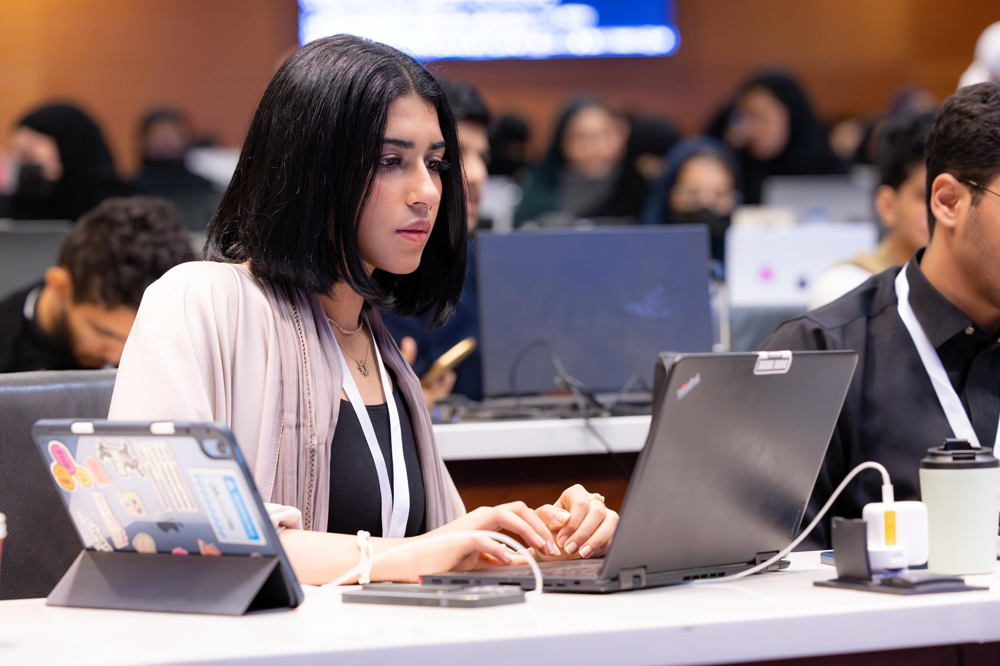

TAGHREED
MOHAMMED
ALMALKI

PROFILE_ID // TG-405
INFORMATION TECHNOLOGY CYBERSECURITY / DIGITAL FORENSICS STATUS // ACTIVEPROFILE
Information Technology student with a focused interest in cybersecurity and digital forensics, committed to strengthening skills in securing systems and networks through hands-on learning, academic coursework, and technical projects, with a particular focus on incident response and threat analysis.
PROFESSIONAL EXPERIENCE
Boat Monitoring System
Municipality of JeddahDeveloped a boat detection system for the Municipality of Jeddah, applying Agile methodology and software engineering practices including requirements analysis, UML modeling, modular architecture, and system validation.
PROJECTS
Boat Monitoring System
Developed a boat detection system for the Municipality of Jeddah using Agile methodology.
User Interface for Shell Operations
A shell interface program that can execute Linux commands on behalf of the end user.
COURSES
Certified Digital Forensic Professional
INEStudying the eCDFP certification from INE and developing digital forensics skills through hands-on learning.
Incident Handling & Response Professional
INEStrengthening digital forensics and incident response skills through hands-on practice.
CERTIFICATES
TECHNICAL SKILLS
SOFT SKILLS
LEADERSHIP & ACTIVITIES
Cyber Security Track Leader
Accepted as Cyber Security Track Leader at Tuwaiq Club - KAU.
Cybersecurity & Robotics Discussion Session
Participated in a discussion session with DRAG Club focused on cybersecurity protection for drones and robotic systems.